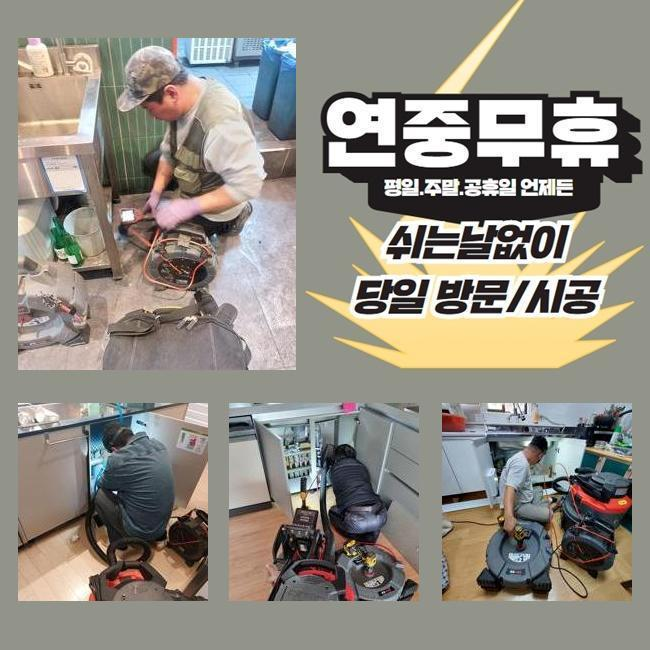
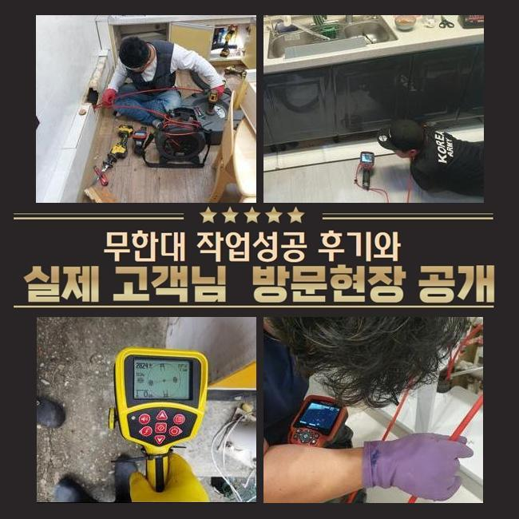
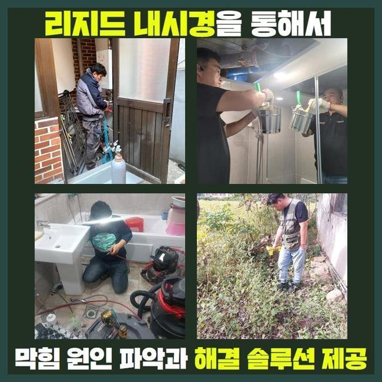
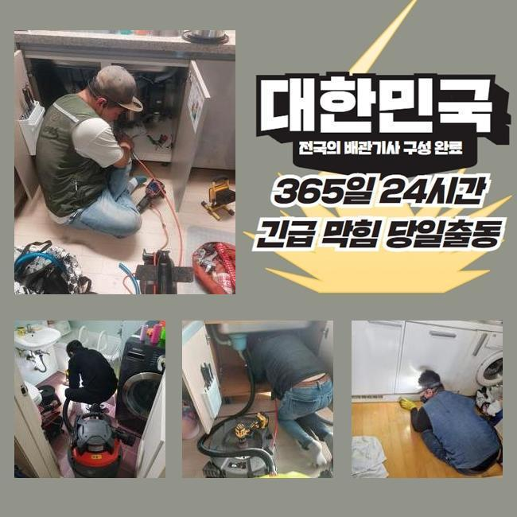
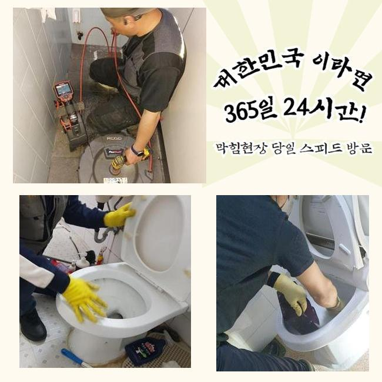
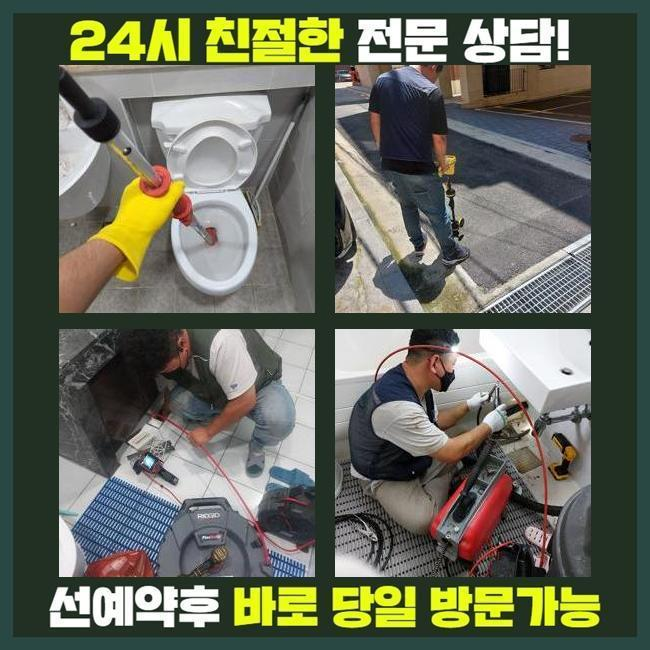

🏠 일산 덕이동싱크대역류 송포동 하수구뚫어주는곳 설비공사
용인 싱크대막힘 전문 시공 후기

📋 작업 개요
- 위치: 용인
- 서비스 유형: 싱크대막힘, 하수구막힘, 배관막힘, 역류해결, 뚫는업체, 배관청소, 고압세척, 설비공사, 배관보수
- 작업 일시: 2024. 12. 29. 17:52
- 업체명: 하수구수사대 (010-5615-2118)
🔍 문제 상황
일산 덕이동싱크대역류 송포동 하수구뚫어주는곳 설비공사
상업적인 건물 내부에서 하수가 울컥대고 나오는 역류가 발생했음을 듣고서 깔끔하게 보수를 해드리려고 작업장소에 장비를 챙겨 갔습니다
여러 세대가 모인 건물이면 내부 장소마다 설치된 배관들이 한곳으로 모이는 형상을 하고 있는 상황이 많은 편입니다
일부 배수로 안에서 중단과 마비가 일어난다면 또다른 배수로도 고장이 나서 여러명이 설비결함에 따른 불편함을 겪을 수도 있습니다
오늘 이야기할 하수구 설치장소는 많은 영업장들이 있는 상가로 예고 없이 하수구 중단 이슈가 터져서 여러 매장들이 장사를 못해서 경제적인 손실까지도 엎친데 덮친 격이었습니다
이렇게 거대한 건물에서 하수구 이슈가 거듭 터진다면 세입자나 건물주 모두에게 어려움을 낳을 수 있는 부분이므로 굼뜨게 움직이지 않고 작업지로 이동하게 됩니다
건물에 도착하면 피해 정도가 두드러지는 곳부터 우선 방문하여 유속이 얼마나 느려졌는지 확인해봐요
통수검사의 경우는 수돗물을 세게 틀어보고 배관 아래로 이 수돗물이 얼마나 빨리 나가는지를 추산하여 문제의 심각도를 추론합니다
수돗물이 줄어드는 속도가 현저히 낮아진데다 심지어 중간중간 흐름의 끊김이 나타난다는 것을 통수검사로써 직접 목도하게 됐습니다
여러 장소에서 하수도의 불통이 일어난 것은 관로 내측에 다량의 오염원인들이 자리하고 있을 가능성이 높다는 뜻입니다

🔎 원인 분석
💡 전문가 진단: 정밀 진단 장비를 사용하여 슬러지의 고착 여부를 판명하고 타격/세척 작업을 실시했습니다.
부피가 점점 불어났을 오물들을 모두 처리해서 말끔하게 되돌리지 못하면 다른 파이프라인 역시 피해가 옮겨져 갈 위험이 있으니 작업의 진행도를 올렸어요
하수시설이 중단되게 하는 뿌리는 관로 여기저기에 붙은 이물질이 대부분이니 이것들을 모조리 긁어내고 없애는 청소에 들어가야 합니다
고객님들이 평범하게 물을 쓰실 때마다 물 자체에 내포된 물질이 많은데 물 속에 섞어들어서 폐기가 되는 과정에서 일부 구간에 누적되어 물의 이동을 막아섭니다
정말 폐기의 목적으로 쓰레기를 버려버리는 상황이 아니더라도 일반 하수에 섞인 미량의 석회나 미네랄 등이 고체가 될 수 있습니다
관로 내측을 관찰해보니 체모나 기름 덩어리처럼 비수용성의 물질들이 축적된 것이 분명했습니다
조금씩 부피를 불려나가다가 끌어당기는 힘까지 생긴다면 거대한 장애요소가 될 수 있어요
물이 조금도 빠져나가지 못하게 막으면 더러운 물의 역행까지 뒷수습을 해야만 할 까다로운 상황이 됩니다
축축한 습기에 닿는다면 부패속도가 빨라질 판을 깔아주는 격이며 이런 찌꺼기가 방출하는 냄새가 같이 올라와서 실내에 머무르는 것 자체가 힘들어집니다
물기와 항상 맞닿아있는 배수로는 늘 축축할테니 좀 더 빨리 썩을 것이며 하수구냄새까지 만듭니다
오염원인들이 이미 접착된 곳들이 다수의 공간일 수 있다보니 빠트리지 않고 골라내야 합니다
단순하게 한 포인트만 문제라면 흡입을 돕는 석션만으로도 통수를 만들 수 있는데요

🔧 작업 과정
독특한 생김새라거나 관로가 복잡하게 이어져있다면 막힘이 일어나는 포인트들이 찾아볼수록 정말 많을 것입니다
그러므로 작업 전에는 관로 모양과 이물질의 견고함과 크기를 관측 후 결과를 내야 합니다
물을 열심히 내려봐도 뚫음작업에 실패했다면 과하게 커져서 빈틈이 없다거나 강한 화석처럼 변성됐을 겁니다
간단한 사안을 훌쩍 넘은 막힘을 해결해 내기 위해서는 근원적인 막힘요인을 찾아서 그 자리에서 떼내야 합니다
방해물의 강직도와 같은 현황을 객관적으로 분석해야 작업 툴도 결정할 수 있습니다
관측을 위해 넣는 내시경은 바닥 아래 자리한 배관까지도 수수께끼였던 관로 상태를 확인하게 해주는 장치로써 찌꺼기가 고정된 좌표와 노폐물의 특성과 크기를 체크할 수 있게 기반을 마련합니다
시공 중에 카메라를 써서 안쪽을 확인한다면 시공이 또다른 장애는 없는지 사이사이 점검을 하게 되니 시공 퀄리티가 올라갑니다
본단계에 착수하기 전에 배관의 컨디션을 우선 점검할 때와 끝날 때 청소가 잘 됐는지 확실히 알아보려는 목적으로 내시경을 돌립니다
관로를 따라 곳곳을 확인해보니 물길이 모이게 되는 메인배관 포함 인근의 섹션까지 오염원이 밀착된 상태라는 것을 눈으로 확인할 수 있었네요
비교적 가벼운 막힘이라면 진동을 기반으로 움직이는 스프링이나 샤프트 장치로 해당 찌꺼기를 자잘하게 절단시켜서 문제를 소강시킬 수 있겠습니다
야외 배관과의 연결점에 생각보다 넓은 섹션들에 오물이 들어갔다면 중소형 장비로는 효과를 맞이하기는 곤란할 수 있어요
물의 이동량이 많은 곳일수록 이물질도 많이 쌓일테니 석션의 집수통에 모아서는 턱도 없을 수 있습니다
이런 거대한 곳을 대할 땐 소방호스처럼 물을 쏴주는 고압수를 통한 청소법을 택하는 솔루션이 적절할 것이빈다
작업을 해줄 하수 설비의 직경에 딱 맞는 노즐을 끼워서 이물질을 타격하는 기술이 있는 도구로 강력한 오물까지 싹 제거됩니다
공간에 있는 배관들은 파손될 여지가 있다보니 해당 기기의 안전한 사용법을 여러 단서를 보고 정하고 작업해요
모든 하수구 청소에 들어가기 전 배수로의 결함과 취약점에 대해서도 예리하게 보고서 하수구 세척에 뛰어듭니다
장소마다 강도 조절을 하면서 연속적으로 세정 작업을 이어갔더니 오랜 시간동안 관로를 숨막히게 만들었던 침전물을 흔적도 없이 소멸시키게 되었네요


✅ 작업 완료
파이프에 돌아다니던 조각들도 잔여량이 없는지를 검토하면 본연의 하수구 기능을 회복시키는 모든 단계가 끝납니다
물이 시원스럽게 나가는지 통수테스트를 거쳐보고 그밖의 의문점이 있다면 친절히 놓치지 않고 이해되도록 알려드려요!
겉면에 찌꺼기가 없는지 확인하고 배수기능이 원복 됐는지 야무지게 체크해 드립니다
많은 탁월한 장치의 힘으로 속 시원하실 수 있도록 하수구의 불능 사태를 해소해 드리고 있습니다
하수 전반에 대한 궁금한 점이 있으시더라도 연락을 편하게 걸어주세요




⚠️ 주방 싱크대 배관 막힘 예방 수칙
- ✅ 기름기가 묻은 식기나 프라이팬은 설거지 전 키친타올로 반드시 기름때를 닦아내세요.
- ✅ 주기적으로 싱크대 개수대에 뜨거운 물을 가득 받아 한 번에 내려 배관 내부 기름을 씻어내세요.
- ✅ 배수구 거름망을 미세한 필터로 사용하시고 음식물 찌꺼기가 틈으로 새어 들지 않게 관리하세요.
- ✅ 베이킹소다와 식초를 뜨거운 물과 함께 일주일에 한 번씩 부어주면 배관 살균과 막힘 예방에 좋습니다.
💡 핵심 정리
- 확실한 장비 작업(내시경 점검 및 샤프트 스케일링)으로 원인을 뿌리 뽑습니다.
- 작업 후 1년 이내에 동일한 부위 재발 시 100% 무상 A/S 서비스를 보장합니다.
- 서울 · 경기 · 인천 전 지역에 24시간 언제든 긴급 출동할 수 있도록 항시 대기 중입니다.
❓ 자주 묻는 질문 (FAQ)
🚨 용인 싱크대막힘 문제로 고민이신가요?
정확한 원인 진단과 확실한 시공으로 재발 없는 해결을 약속드립니다.
24시간 긴급 출동 | 서울 · 경기 · 인천 전지역 | 1년 내 재발 시 무상 A/S